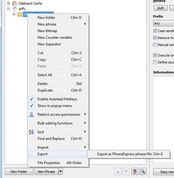

[BACK] (XBN-PhraseExpress is released under the LPGL 2.1)
I do not edit my phrases in the PhraseExpress application. I only edit them in TextPad (a plain-text editor by Helios Software Solutions). Whenever I make a change to a phrase, I import it into the PhraseExpress application before it can be used. This is akin to "compiling" the code.
Contents:
[go] Why I do not edit phrases in PhraseExpress[go] My personal development environment[go] XBN-PhraseExpress: TextPad-bootstrapsWhile XBN-PhraseExpress is tailored to creating and editing code in TextPad, although there are large portions of it that may be taken andvantage of by those developing exclusively in the PhraseExpress application (or elsewhere).
Also note that I use the Dvorak keyboard layout, which may explain the otherwise unweildy autotexts I've chosen, and does explain why I must use
{#insert zTPPaste}
instead of
{#CLIPBOARD -paste}.
In 2013, I discovered the free-and-open-source VirtuaWin. It creates multiple desktops on a single monitor, effectively simulating multiple monitors. I use this to create two desktops:
zCASpRIGHT to move from desktop one to two, and zCASpLEFT to move back to desktop one.
In general, here is my setup:
I have one or more instances of TextPad open in this desktop.
This is an overview of importing, in the context of my development environment. There are also step-by-step import instructions.
On the left side of this desktop are two Windows Explorer windows, one right on top of the other. Both point to the same directory
{#insert zROOT_DIR_XBNPE_MAIN}
with one having the following search:
*.px.txt datemodified:7/27/2013 (today's date)
and the other with this:
*_pcddmenu.px.txt datemodified:7/27/2013
The first folder displays all XBN-PhraseExpress phrase-files, with most-recently-edited at the top (when ordered by date--I always use the "details" view). The second displays only the 'xh...' phrase-creator drop-down menu files.
Note that the ordering of these filter-terms is important. Putting the '...px.txt' first, shows you at a glance in the taskbar, which window is for which file type. (Of course, if you're coding at 11:59pm, expect everything to disappear in a minute...)
(See below for an important distinction when importing ddmenus as opposed to general phrase-files.)
When importing one or more phrase-files, I open PhraseExpress on the right side, then drag the files into it.

To avoid issues with VirtuaWin, I wait until PhraseExpress is completely closed before switching back to desktop one.
When dragging a file into PhraseExpress, that file (which becomes a ".px" folder) adopts the settings of its parent folder. For this reason, I import normal phrases separately from ddmenus--hence the two explorer windows. Normal phrase-files are only imported (dragged) into "normally configured" folders, and ddmenus only into "ddmenu-configured" folders.
There is detailed information on the differences between "normal" and ddmenu-item phrase-types, including how to specifically set them up.
There are two primary reasons that I do not edit phrases in PhraseExpress.
There is no way to search or replace using regular expressions in the PhraseExpress application. In particular there is no way to make replacements on any set of files, whether they are in one common parent-directory, or dispersed througout many directories. For me, this is a critical need.
While PhraseExpress has many ways of importing phrases...

...there is only one way to export it: Into a proprietary PhraseExpress format.

Therefore, any phrases created in PhraseExpress exclusively, are trapped there. While copying a few phrases out of PhraseExpress is manageable...
...copying hundreds of phrases in this manner is practically impossible.
In addition, there are significant difficulties associated with importing multiple files. In addition to your code being "trapped" in PhraseExpress, the values in the choose-import-action dialog must be chosen on every import, and in the import-phrase-format dialog, values must be chosen for every file.
[top] XBN-PhraseExpress: TextPad-bootstrapsA "TextPad Bootstrap" ("tp-bootstrap") is a TextPad built-in command that is depended on by an XBN-PhraseExpress project. Specifically, all tp-bootstraps required by a project must be installed before installing the project itself. TextPad-bootstraps are what make it possible for XBN-PhraseExpress and TextPad to communicate.
Contents:
[go] Format and requirements[go] Utilities[go] TextPad-bootstraps, as documented in this section, are only applicable to the XKP and TKPC projects.[go] The tp-bootstrap list for the XBNPE-Key-Press (XKP) project[go] The tp-bootstrap list for the TextPad built-in commands (TPKC) project[go] Commands in the "Characters" category may not be TextPad-bootstraps[go] Steps to add a new tp-bootstrapA "TextPad-bootstrap" is a built-in TextPad command that has a "bootstrap key-command". A "Non-BootStrap command" (an "nbs-command") is a command that is not a tp-bootstrap. A command that is not a tp-bootstrap may or may not have nbs-key-commands (nbs-kcs). An "nbs phrase" is a phrase that triggers a TextPad built-in command, that is not a tp-bootstrap (that does not have a bootstrap-kc). The "primary key-command" for a TextPad command is:
[BACK] TextPad-bootstraps: Steps for adding a new tp-bootstrap(See: tp-bootstrap file locations)
{#insert zXPROOT_DIR_tpkc}/textpad__tpkc/for_v_7_0_9/user_config/
"Esc" and "TPKeys")BookmarkPrev zTPBookmarkGTPrev Srchmkprv __ES__ 100 {#insert zDOWN3}
BookmarkPrev zTPBookmarkGTPrev Srchmkprv yes 100 {#insert zDOWN3}
zTpkcSrchmkprvIsBtstrp_yes
{#insert zXPROOT_DIR_AG_tpkc}\cmd_cfg_global__bldprc06\search\search_BookmarkPrev.px.txt
search_BookmarkPrev.px.txt
zTestAllXKPTextPadBootstraps
zTestAllTpkcTextPadBootstraps
{#insert zXPROOT_DIR_tpkc}/textpad__tpkc/for_v_7_0_9/user_config/tp_ALL_cmds_pcddmenu.txt
"[BS]" to its ddmenu-entry.[BACK] TextPad-bootstraps, as documented in this section, are only applicable to the XKP and TKPC projectsWhile all XBNPE projects have TextPad-bootstraps only the XKP and TPKC projects require them to be in the form as described in this section. Once the TPKC project is installed and fully built (that is, once you have successfully run all build processes through at least 14, and imported all its output phrase-files), "installing" a TextPad-bootstrap is simply a matter of assigning that particular TextPad-command a key-command via the TPKC project:
Textpad > Configure > Preferences > Keyboard
Categories > "Cursor" > Commands > "PageDown"
PgdownzTpkcPageDownNbsKcCount
'0' to '1' (it must be currently zero, because zero means it has no key-commands!), andzTpkcPageDownNbsKcEsc1
\\\{#insert zPGDN\\\} [BACK] Commands in the "Characters" category may not be TextPad-bootstrapsThe "Characters" category is the only one in which commands do not have names. Instead, the "name" of each command is the character itself. This is unacceptable to the TPKC build process, which therefore changes each to a specific name. For example, 'Ã' is changed to "Char14AUpperTilde". Since this translation does not occur until after the TPKC-project is installed and built (meaning all build processes from 02 through 14 are successfully executed), no commands in this category may not be used as TextPad-bootstraps, until after all TPKC build processes have been successfully executed.
Note that this restriction only applies to the XKP and TPKC projects.

[BACK] TextPad-bootstrap: Format and requirementsAn example TextPad-bootstrap:
zTPCopy -- TextPad built-in command: EditCopy
{#CTRL -chars c}{#insert zTSlp}{#sleep 10}
zTPCopyEsc
\\\{#CTRL -chars c\\\}\\\{#insert zTSlp\\\}\\\{#sleep 10\\\}
zTPCopyTPKeys
Ctrl+C
(This is displayed in un-compressed format. Also see phrase-format specifications.)
These three phrases, as a whole, define a TextPad-bootstrap.
[go] Main phrase: zTPCopy[go] Escaped (literalized) phrase: zTPCopyEsc[go] TextPad key-press phrase: zTPCopyTPKeysCollectively, the escaped and tp-key-press phrases are called the "non-main" tp-bootsrap phrases. These three phrases must be split into two specific files.
To "install" a TextPad-bootstrap is to simply create (and then import) these three phrases, and actually assign the configured key-command, via
Textpad > Configure > Preferences > Keyboard
(See the screenshot below.) Unfortunately, this is a largely manual process. For example, "c2pl" and its related utilities--along with everything else in XBN-PhraseExpress--are not available until at least the XKP-project is installed. Importantly, any errors in a tp-bootstrap will cause its depend-ing XBNPE-projects to fail--unpredictably, and without any diagnostic information. Each major XBNPE project, however, has a testing function to ensure that all bootstraps are, at least roughly, properly installed.
TextPad-bootstraps--as well a much of XBN-PhraseExpress--are only useful, and usable, from within the TextPad application.

[BACK] TextPad-bootstraps: Stored in two specific filesThe XKP and TPKC projects require that their TextPad-bootstrap phrases (example) be split into two separate phrase-files. The main phrases must go into one, and the escaped and TextPad key-presses in another. This makes it possible for the TPKC-project to be built for .............. other computers.
In the XKP project:
tp_bootstraps_for_xkp_project.px.txttp_bootstraps_for_xkp_project_esc_tpk.px.txtIn the TPKC project:
tp_bootstraps_for_xkp_project.px.txttp_bootstraps_for_xkp_project_esc_tpk.px.txt[BACK] TextPad-bootstraps: UtilitiesAll these utilities require the name of the main tp-bootstrap phrase to be in a variable named
zvBTSTRP_PHRS_NM
zTPBtstrpEscKC_M_bspm: Gets the escaped key-command, after unescaping itzTPBtstrpEscPhrsNm_M_bspm: Gets the name of the phrase containing the escaped key-command.zTPBtstrpTPKeys_M_bspm: Gets the value of the TextPad key-press.zTPBtstrpTPKeysPhrsNm_M_bspm: Gets the name of the phrase containing the TextPad key-press.Phrase-creators for these utilities are available via xhtb.
tpbsutildemo
{#SETPHRASE -description zvBTSTRP_PHRS_NM -content zTPCopy -autotext zvBTSTRP_PHRS_NM -folder ctvv_folder}
{#insert zTPBtstrpEscPhrsNm_M_bspm}:{#ENTER}{#TAB}
{#insert zTPBtstrpEscKC_M_bspm}{#ENTER}{#BKSP}
{#insert zTPBtstrpTPKeysPhrsNm_M_bspm}:{#ENTER}{#TAB}
{#insert zTPBtstrpTPKeys_M_bspm}{#ENTER}
Output:
zTPCopyEsc:
{#CTRL -chars c}{#insert zTSlp}{#sleep 10}
zTPCopyTPKeys:
Ctrl+C
[BACK] TextPad-bootstrap: Main phrasezTPCopy -- TextPad built-in command: EditCopy
{#CTRL -chars c}{#insert zTSlp}{#sleep 10}
"zTP". Example value:
zTPCopy -- TextPad built-in command: EditCopy
The content of the main tp-bootstrap phrase (its phrase-body) is the key-command that triggers the TextPad command. For example:
{#CTRL -chars c}{#insert zTSlp}{#sleep 10}
The phrase-body for all tp-bootstraps are in this format:
zTSlp.{#insert zTPCopy}{#sleep 50}Note that "x-key-presses" in the XBNPE-Key-Presses (XKP) project already incorporate zTSlp. For example, the above
{#CTRL -chars c}{#insert zTSlp}
can be replaced by
{#insert zCC}
However, since the tp-bootstraps for the XKP-project must exist before the XKP-project is ever installed, these key-presses must be "raw" PhraseExpress key-presses, explicitely followed by zTSlp.
Conversely, TextPad-bootstraps for all projects except XKP (such as the TextPad built-in commands [TPKC] project) can--and should--take advantage of these x-key-presses. For example, this is the main phrase for a tp-bootstrap in the TPKC project:
zTPFileOpen -- TextPad built-in command: FileOpen
{#insert zF12}{#sleep 10}{#insert zF8}{#sleep 1500}
[BACK] TextPad-bootstrap: Escaped (literalized) phraseThis and the TextPad-key-press phrase are the "non-main" tp-bootstrap phrases.
zTPCopyEsc
\\\{#CTRL -chars c\\\}\\\{#insert zTSlp\\\}\\\{#sleep 10\\\}
'z' at the beginning, and "Esc" at the end.
"zTPCopyEsc"'\'). This is how you "escape" phrase-express code. For example, if the main-phrase's value is equal to
{#CTRL -chars c}{#insert zTSlp}{#sleep 10}
\\\{#CTRL -chars c\\\}\\\{#insert zTSlp\\\}\\\{#sleep 10\\\}(See the available tp-bootstrap utilities.)
In order to diagnose key-command conflicts (two or more commands having the same key-command), it is important to be able to display the tp-bootstrap's key-command (the value of the main phrase) to the user. Having this redundant escaped-version is the only way. In particular, this is displayed in the various TPKC debugging utilites (the "Debug" and "List" commands), and in the "Assign all KCs" process when the pause-on-kc field flag is on (second screenshot below).
Escaped key-commands--both for tp-bootstraps and Non-BootStraps (nbs)--also make much of the TPKC build process possible. In particular, it makes it possible for TPKC adiminstrators to run the build process for ........ others.


[BACK] TextPad-bootstrap: TextPad key-press phraseThis and the escaped phrase are the "non-main" tp-bootstrap phrases.
zTPCopyTPKeys Ctrl+C
Must be equal to the name of the main tp-bootstrap phrase, with an additional 'z' at the beginning, and "TPKeys" at the end. Example value:
zTPCopyTPKeys
Must be the exact value printed in the TextPad "all-command list", for this particular command. For example the built-in TextPad command
EditCopy
has a tp-bootstrap phrase name (the name of its main-phrase) of:
zTPCopy
Its key-command, as listed in TextPad, is
Ctrl+C
Below are three screenshots.
"EditCopy" command, and its key-command "Ctrl+J"[List] button. This button prints out all key-commands, for all commands in the currently-selected category. When the "All" category is selected, pressing the [List] results in the "TextPad all-command list", which is needed by the initial user facing build-process in the TPKC project.zTP*TPKeys